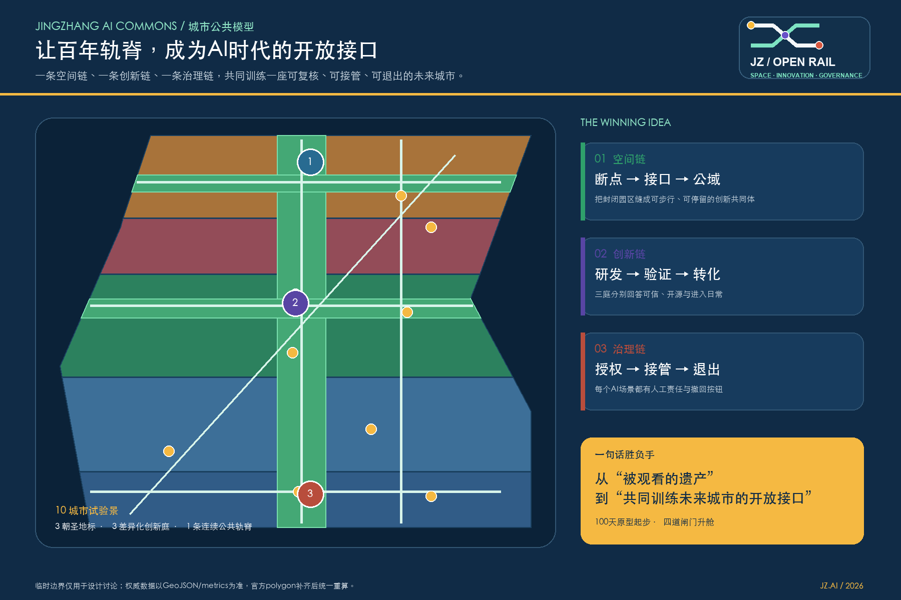
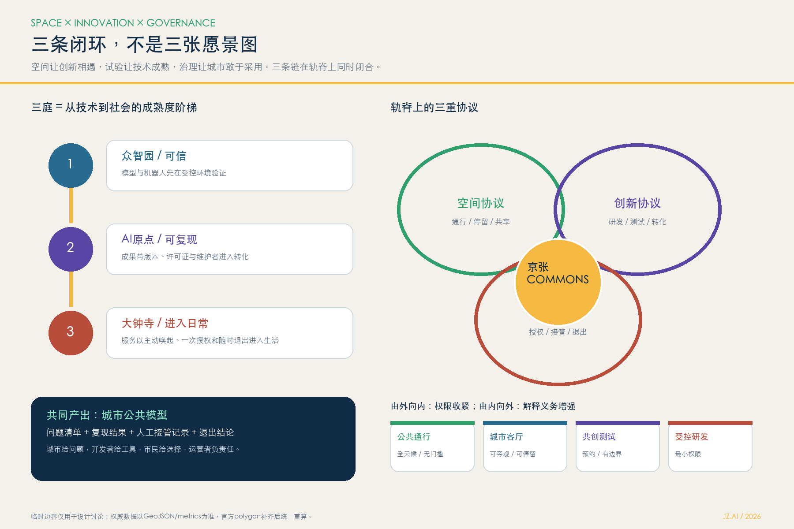
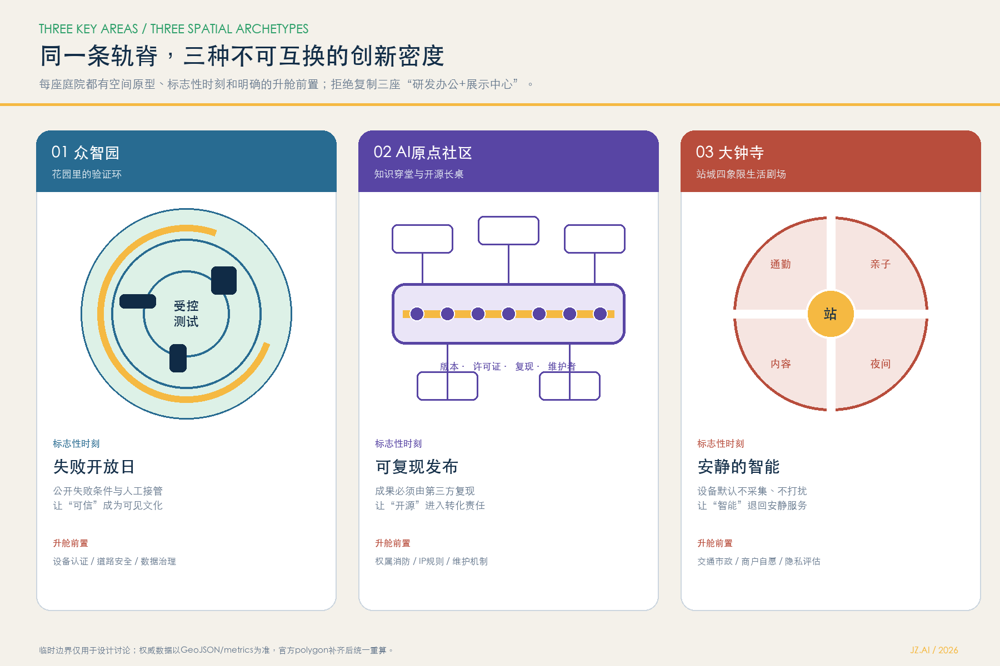
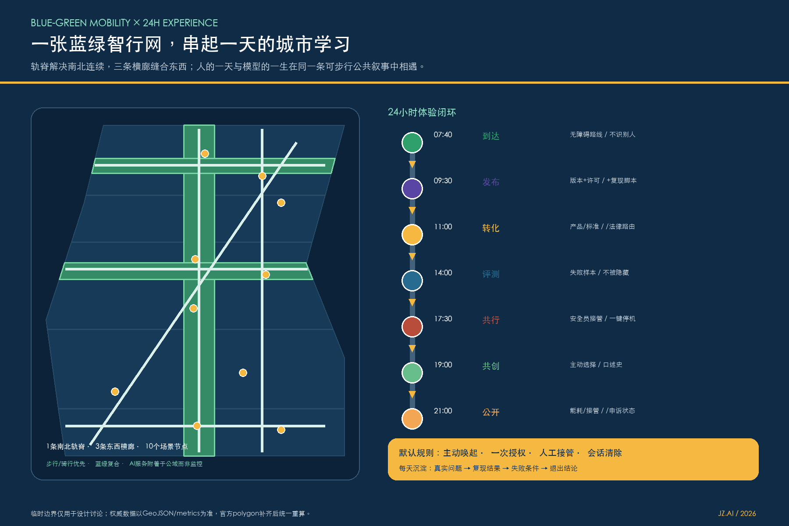
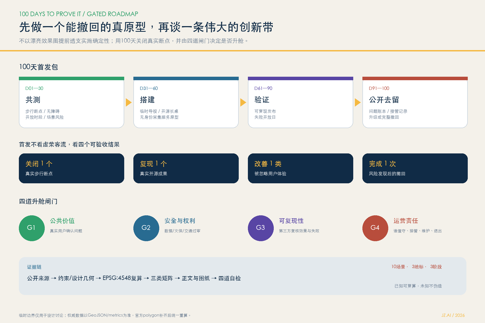

为什么是京张？
让被观看的铁路遗产重新成为连接知识、产业与人的公共基础设施。
让百年轨脊，成为AI时代的开放接口。 一条空间链、一条创新链、一条治理链，共同训练一座可复核、可接管、可退出的未来城市。
让被观看的铁路遗产重新成为连接知识、产业与人的公共基础设施。
可信验证、开源转化、进入日常，构成从技术到社会的成熟度阶梯。
100天可撤回原型起步，以公共价值、安全、复现和运营四道闸门升舱。
总览地图叠合三层范围的传导、用地分区、交通慢行、蓝绿公共空间、建筑与更新项目、AI 场景节点。图面是解释层，权威证据仍为GeoJSON、metrics和矩阵。

43.6平方公里任务事实：产业生态、区域协同、命名与未来城市形态。
约11.4平方公里任务事实：城市更新、轨脊公域、交通市政与风貌。
三处临时范围：全栈验证庭、开源原点庭、智能生活庭。

三庭共用一条开放轨脊，但承担不同的创新密度和治理任务。

先修补步行、无障碍和公共停留，再附着可关闭、可人工复核的AI服务。建筑基底和道路中心线均为概念示意，等待测绘、红线、权属和专项条件。

每个场景都采用目的限定、数据最小化、主动选择、人工复核、申诉和可撤回机制；前三项为产业测试验证场景，不表示获批运营。

自检状态：以最新的`self_check.json`为准；正式封包持续执行deterministic validation、spatial review、visual packaging check和professional evidence review四道检查。
| 任务覆盖 | 公告1.3、1.4、1.5及agent.1—agent.6全部映射至正文、几何、指标、图纸和视觉章节。 |
|---|---|
| 来源 | 官方公告、清权任务书、专业标准、公开案例网页与仓库provisional geometry；案例只作背景机制分析。 |
| 假设 | 官方边界、控规、道路、宗地、建筑、文保、市政与设施底数待补，相关结论均降级为概念建议。 |
| 版权 | 图文与数据图层原创生成，无远程图片、外部脚本、商标、肖像或商业地图。 |